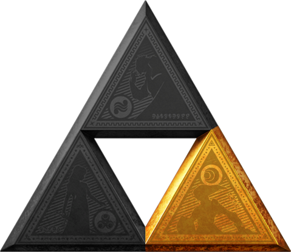

Courage

Description
Today we are going to learn how to obtain the Triforce of Courage. To do so, we will need to meet a certain set of parameters,
and then follow a specific course of action. Grab the Master Sword, stock up on Deku Sticks,
and let's get to work!
Ingredients/Requirements
- Be the Hero of Time, aka Link
- Kokori Emerald
- Goron Ruby
- Zora Sapphire
- Ocarina of Time
- The Master Sword
The Quest
- Defeat the monster inside the Deku tree to earn the Kokori Emerald
- Defeat the monster in Dodongo Cavern to earn the Goron Ruby
- Defeat the monster inside Jabu Jabu to earn the Zora Sapphire - be careful to avoid unwanted advances from Princes Ruto
- Combine the three earned ingredients in front of the Door and use the Ocarina of Time
- Approach and pull the Master Sword from the pedastal, it should be removed with ease, despite it's size
- Don't freak out - you just aged seven years, and you are in a strange place!
- Upon arival, listen to the old man's story, and you will realize that you have possessed the Triforce of Courage the entire time!
- Continue your quest through time to defeat Ganon and save Hyrule!